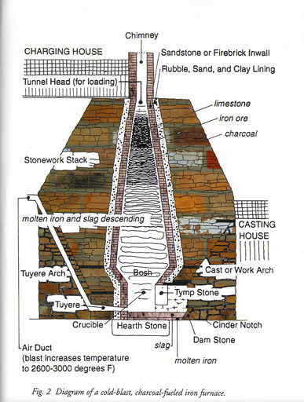

나폴레옹과 석탄 - 트럼프 파리 협정 탈퇴 기념 재업
게시: 2017-06-01T23:47:32+09:00
현대 사회를 움직이는 에너지원은 바로 석유입니다. 석유를 에너지원으로 하는 경제는 장기적인 측면에서는 사실 매우 좋지 않습니다. 석유는 많은 오염 물질을 발생시킬 뿐 아니라, 재생이 불가능하고, 게다가 자원의 분포도 지역마다 고르지 않습니다. 일단 우리나라에 석유가 안나지 않습니까 ? 석유 기반의 경제는 이런 문제점들 때문에, 빠른 속도로 파멸을 향해 치닫게 됩니다. 석유 자원의 고갈이나 온실 가스 효과 뿐만 아니라, 석유를 수출하는 나라와 수입하는 나라 사이의 갈등이 경제적/군사적 갈등을 불러일으키기 때문입니다.
그에 비해, 나폴레옹 시대 직전까지의 경제는 매우 소박한 에너지원을 사용했습니다. 바로 나무입니다. 나무를 태워서 얻는 열로 난방을 하고, 음식을 만들고, 금속 제품을 만들었습니다. 직접적인 열 에너지 외에, 운송용으로는 황소나 말 같은 가축의 힘을 이용했습니다. 이렇게 나무와 가축을 에너지원으로 하면 좋은 점이 많습니다. 건조 지역을 제외한 세계 어디서나 쉽게 구할 수 있고, 복잡한 처리 공정을 거치지 않고도 곧장 땔감으로 사용할 수 있을 뿐 아니라, 무엇보다 베어낸 뒤 그 자리에 나무를 또 심는 등 관리만 잘 하면 지구 최후의 그 날까지 에너지원이 고갈되지 않는다는 점입니다.
하지만 실제로는 나무를 연료로 하는 경제는 발전의 가능성이 매우 제한되어 있었습니다. 바로 원하는 만큼 땔감을 구하기 어렵다는 것이지요. (오늘날 대량생산 대량소비 사회의 폐해를 보면, 이 제한점은 오히려 장점처럼 느껴지기도 합니다.) 농업이 발달하면서 인구가 늘어나자, 당장 숲이 망가지기 시작했습니다. 이는 일단 농사를 지으려면 숲을 베어내고 농토나 목초지를 넓혀야 하기 때문이기도 하지만, 그렇게 수가 늘어난 사람들이 식사를 하고 추위를 피하려면 당장 땔감이 필요하기 때문이었습니다. 이 때문에 동서양을 막론하고, 경제 문제에 있어 식량 문제 못지 않게 중요한 것이 연료의 확보였습니다.
레이 황이라는 사람이 지은 "1587 아무일도 없었던 해" (가지않은 길 출판)라는 책은 명나라 시대의 정치/사회를 그리고 있는데, 여기에 어떤 유학자의 편지가 소개됩니다. 많은 친척들이 모일 때가 되자 이 유학자는 방문할 친척들에게 편지를 보내어 "쌀과 땔감을 가능한 한 많이 지참하고 오라"고 부탁합니다. 또, 19세기 아일랜드에서 총각이 장가를 가기 위한 경제적 조건은 두가지였답니다. 감자밭이 있냐는 것과, 이탄(peat, 지표면에서 생성된 일종의 석탄)을 캘 수 있는 권리를 가지고 있느냐 하는 것이었습니다. 이 두가지 사례만 봐도, 식량 못지 않게 땔감이 중요했다는 것을 아실 수 있습니다.
요즘도 그렇습니다만, 대개의 숲은 그 소유권이 국가 또는 대지주에게 있었습니다. 그리고 역시 요즘도 그렇지만, 국가든 대지주이건 숲 주변 주민들이 숲에서 땔감을 채취하는 것을 그리 좋아하지 않았습니다. 특히 유럽에서는 귀족들의 사냥을 위해 숲을 보호해야 했기 때문에, 숲지기는 밀렵꾼들 뿐만 아니라 땔감으로 나뭇가지를 꺾거나 주워가는 농부들을 무자비하게 단속했습니다. 19세기 초 영국의 경우, 어떤 남자는 동네에 사는 가난한 노파에게 주려고 숲에서 마른 나무가지를 한다발 줍다가 체포되어 재판에서 유죄 판결을 받을 정도였습니다.
연료 문제는 사람들의 난방 및 취사에만 해당되는 것이 아닙니다. 사회가 산업 사회로 발전하기 위해서는 대량의 연료가 반드시 필요했습니다. 자동차도 없고 화학 공업도 없던 시절에 그런 대량의 연료가 어디에 필요했을까요 ? 바로 제철소 및 대장간이었습니다. 생각해보면 우리가 잘 알지 못하는 것이 많습니다. (저만 모르는 것인가요 ?) 고구려 시대나 로마 시대, 또는 유럽 중세 시대에는 제철 제련을 할 때 어떤 연료를 썼을까요 ? 요즘처럼 석탄을 썼을까요 ?
영국에서는 2세기 경부터 로마인들이 석탄 채굴에 나설 정도로, 석탄은 일찍부터 인류에게 알려진 연료였지만, 깊은 땅 속에서 캐내기도 힘들 뿐더러 그 무게 때문에 수송비가 너무 비싼데다 연소 시에 발생하는 유독 가스 때문에 그렇게 많이 사용되지는 않았습니다. 특히, 석탄 속에 함유된 황은 사람보다도 무쇠에 더 안좋은 영향을 주었기 때문에, 철광석에서 무쇠를 뽑아내는 용광로(blast furnace)에서는 석탄을 사용하지 못했습니다. 석탄이 철물 제조에 사용되는 것은 용광로에서 만들어진 선철(pig-iron)을 가열/가공하기 위해 대장간 등에서 사용하는 단조로(forge)의 연료 정도였습니다. 그렇다면 용광로에는 무엇을 썼을까요 ? 바로 숯이었습니다. 원래 철광석이라는 것은 돌 사이에 산화된 철이 박혀 있는 것이거든요. 높은 온도로 돌과 산화철을 녹이는 것도 필요하지만, 산소와 결합된 철을 분리해내려면 산소가 철보다 더 좋아하는 것을 제공해주어야 했습니다. 바로 탄소지요. 숯이나 석탄이나 사실 주성분은 탄소니까요. (그 과정에서 대량의 일산화탄소나 이산화탄소가 쏟아져 나오는 것은 비극이지요.)

(이 그림은 무단 전재하기 미안할 정도로 좋은 그림이네요. 어차피 이 친구도 책에 나온 그림 scan한 것 같긴 한데... 출저는 http://explorepahistory.com/displayimage.php?imgId=4266 입니다)
여기서 잠깐, 그 많은 쇠를 다 숯으로 만든 것이라는 것이 믿어지십니까 ? 사람이 먹을 죽을 끓일 연료도 부족한 판에 그 많은 쇠를 만들어내려면 숲을 다 베어내도 부족할 것 같은데요 ? 여기서 두 가지 사실을 생각하셔야 합니다. 먼저, 강철왕 카네기가 나오기 전인 19세기 후반까지도, 철은 주요 산업 재료가 아니었습니다. 그때까지 철이 가장 많이 사용되었던 곳은 무기류였는데, 총이나 대포나 모두 주요 부분만 철로 되어 있었고 나머지 부분은 모두 나무로 되어 있었습니다. 건축물에도 철근같은 것은 사용할 수 없었고요, 마차같은 것도 모두 나무로 만든 것이었습니다. 즉, 주 원료는 나무였다는 것이지요. (여전히 숲은 베어지겠군요. T.T)
두 번째 사실은 좀더 뜻 밖인데, 18세기 초반에 영국 제철 산업은 꾸준히 쇠퇴하고 있었다는 것입니다. 이는 철물류의 인기가 시들해져서가 아니었습니다. 철물류의 사용은 오히려 늘고 있었습니다. 생산은 줄어드는데 사용량은 늘어났으므로, 당연히 수입량이 많아져서 당시 영국에서 사용되는 철봉의 2/3는 수입품일 정도였습니다. 영국의 경우 왜 제철 산업이 쇠퇴하고 있었을까요 ? 그 원인은 다름아닌 연료 부족 때문이었습니다. 즉, 숲을 베어내어 제철용 숯을 만들던 것이 이제 한계에 달하여, 숯 공급량이 떨어졌던 것입니다. 당시 영국 숲은 (귀족들의 사냥 욕구를 충족시키기 위한) 법률적 보호에도 불구하고 빠르게 줄어들고 있던 상태였습니다. 그렇다면 영국은 어디서 철을 수입했을까요 ? 바로 영국의 제철 산업이 쇠퇴한 원인이 그대로 반영되어, 스웨덴처럼 철광석 뿐만 아니라 숲이 풍부한 나라들에서였습니다.
이렇게 공급도 부족하고, 따라서 비싼 숯 대신, 16세기부터 석탄을 이용한 제철법이 많이 연구되었으나, 역시 석탄 속의 황 성분이 무쇠에 악영향을 끼치는 문제때문에 계속 실패해왔습니다. 그러나 필요는 발명의 어머니라고, 결국 18세기 초 영국의 에이브러엄 다비(Abraham Darby)가 석탄을 가열 처리하여 황을 제거하고 탄소 함량을 높여 코크스로 만드는 법과, 이를 이용하여 숯을 사용하지 않는, 코크스 제철법을 최초로 성공시켰습니다. 그 결과, 영국의 제철 산업은 비약적으로 발전을 거듭하여, 마침내 1787년 영국 해군성에서는 여태까지 스웨덴에서 수입해서 쓰던 군함의 닻을 영국산 닻으로 교체했습니다.
이렇듯 영국 제철 산업의 발달은 국가의 주에너지원이 어떤 것이냐에 따라 그 산업 발전이 얼마나 좌지우지되는가를 보여주는 좋은 예입니다. 하지만 영국이 주에너지원을 나무에서 석탄으로 바꾸면서 일어난 변화는 제철 산업 뿐만이 아니었습니다. 영국의 국내 수송 수단이 크게 발달하게 되었던 것입니다. 지난 2MB 정권에서 대운하를 파겠다는 소동이 있었습니다만, 18세기 영국의 국내 주요 수송 수단은 바로 운하였습니다. 이 운하들의 주된 건설 목적은 곡물도 아니고, 목재도 아닌, 바로 석탄을 수송하기 위해 건설된 것들입니다.
방금 설명했듯이, 18세기 영국에서는 기존의 숯 대신 석탄을 이용해서 철을 만드는 공정이 도입되면서 제철 생산량도 많아지고, 덩달아 석탄 채광량도 부쩍 늘어났습니다. 문제는 영국이라고 동네마다 땅만 파면 석탄이 뭉텅이로 나오는 것은 아니라는 것이었지요. 결국 석탄 광산이 있는 지방에서 제철소가 있는 공업 지역으로의 석탄 수송이 문제가 되었습니다. 요즘도 그렇습니다만, 당시 영국도 주요 에너지원은 특권층이 장악하고 있었습니다. 주요 탄광지역은 대귀족이 소유권을 가지고 있었는데요, 그 중의 한명이 브릿지워터(Bridgewater) 공작이었습니다. 이 양반은 월시(Worlsey) 부근에 있는 자신의 석탄 광산에서 캐낸 석탄을 맨체스터(Manchester)로 수송하여 이익을 챙겼습니다만, 이 석탄을 말을 이용하여 육로로 실어보내면 1톤에 9~10 실링이 드는 것이 큰 골치거리였습니다. 결국 이 양반은 많은 자본을 투자하여 그 구간에 운하를 건설했습니다. 이 운하의 경제성이 그럴싸한 것으로 증명이 되자, 이 양반은 석탄 광산보다도 운하 사업에 재미를 붙여, 나중에는 맨체스터에서 리버풀까지의 대운하를 구축하는데 자금을 댔습니다. 이렇게 18세기 영국의 최첨단 사회간접자본인 운하 건설이 활성화되어, 그 18세기가 끝나기 전에 영국에는 3천마일에 해당하는 운하가 건설되었습니다.
이 운하를 오가는 배의 에너지원은 무엇이었을까요 ? 말이었습니다. 아무래도 좁은 운하에서 범선을 쓸 수는 없었고, 화물선에서 나온 긴 밧줄을 운하 옆의 둑을 따라 걷는 말이 끄는 형태로 배가 움직였습니다. 속도는 시속 8~9마일 (12~14km) 정도였다고 합니다. 이런 운하의 모습은 C.S.Forester의 소설 혼블로워 시리즈 중 "Hornblower and the Atropos"에 잘 묘사되어 있습니다.
영국이 18세기 내내 이렇게 석탄을 이용하여 산업 혁명을 일구어내고 있을 때, 영국의 영원한 라이벌이라는 프랑스는 무엇을 하고 있었을까요 ? 놀랍게도, 그냥 예전 방식을 거의 고수하고 있었습니다. 프랑스 사람들이 어리석어서였을까요 ? 물론 아닙니다. 문제는 프랑스에는 영국처럼 석탄이 많이 나지 않았다는 것에 있었습니다. 제가 전에 '브리오슈, 혁명의 과자' 편에서 소개한 에밀 졸라의 제르미날(Germinal)이라는 소설에 나오는 그레그와르 부부는 그 증조부가 서기일을 하며 아끼고 아껴서 모아둔 돈으로 1760년 경 결성된 석탄 광산 개발 회사의 주식에 투자를 한 덕분에 유복한 중산층이 된 사람들입니다. 이 그레그와르 부부의 증조부가 투자한 석탄 광산은 처음에는 돈만 잡아먹고 결실을 전혀 내지 못하다가, 무려 60~70년이 지난 1820년대에 들어서야, 즉 나폴레옹이 폐위된 이후에야 번영을 가져오기 시작합니다.
이는 두가지 사정을 반영합니다. 프랑스의 느린 산업화와, 프랑스 영토에서는 석탄 매장량이 많지 않았다는 것입니다.
확실히, 프랑스에서는 석탄을 이용한 산업 발전이 영국에 비하면 매우 더디게 진행되었습니다. 그 이유의 일부는 기술 혁신에 대해 프랑스인들이 그다지 적극적이지 못했기 때문입니다. 이미 영국에서 석탄을 이용한 제철업이 활황을 띄고 있다는 것을 뻔히 알면서도 프랑스인들은 선뜻 그런 기술적 변화에 대해 돈을 투자하기를 꺼려했습니다. 하지만 더 큰 이유는 아무래도 프랑스에는 영국만큼 석탄이 많이 나지 않았다는 것에 있었습니다. 람부르(Rambourg)라는 프랑스 기업가가 1814년 적은 메모를 보면 이런 사정들이 잘 표현되어 있습니다. 이 메모에서, 람부르는 제철 과정에 사용되는 숯을 석탄으로 대체하자고 쉽게 말하는 사람들의 무식함을 개탄하면서, 그렇게 하자면 용광로나 제련로 등의 기계류 설계를 모두 바꾸어야 하는 것은 물론, 제철소의 위치까지도 탄광 근처로 옮겨야 하고, 그 철광석과 연료를 수송해야 하며, 공장 노동자들을 다 새로 훈련시켜야 하는데 그 어려움을 간과하고 있다고 주장하고 있습니다. 사실 어느 정도 맞는 말입니다. 그렇게 하자면 많은 자본이 필요할 뿐더러, 무엇보다 석탄이 많이 나서 석탄 가격이 충분히 낮아야 했는데, 프랑스에서는 사정이 그렇지가 못했습니다.
나폴레옹 당시 프랑스의 탄광 지역은 다름아닌 벨기에였습니다. 벨기에는 원래 프랑스 땅이 아니었습니다만, 나폴레옹이 프랑스 제국의 일부로 아예 합병을 해버렸습니다. 어차피 그 지역 주민들의 상당수는 프랑스어를 사용했지요. 나폴레옹의 정복 전쟁 중 가장 짭짤했던 정복지가 바로 벨기에였습니다. 벨기에 지역의 아이노(Hainault)와 리에쥬(Liege) 지역의 풍부한 석탄 광산이 프랑스 자본에 의해 개발되었는데, 이는 역시 제철업을 위한 것이었습니다. 중세시대부터 플랑드르, 즉 벨기에 지방은 영국과 깊은 관계를 맺고 있어서 영국으로부터의 기술 이전이 빨랐고, 벨기에의 노동자들도 그런 신기술에 익숙했기 때문에, 벨기에의 당시 산업화 속도는 거의 영국 수준이었습니다. 그랬기 때문에 아미앵 평화 조약을 맺을 때, 프랑스는 벨기에를 프랑스 제국의 일부로 둘 것을 강력히 주장했고, 결국 관철시켰습니다. 또 벨기에의 기업인들로서도, 프랑스와의 합병이 그리 나쁜 것만은 아니었습니다. 프랑스라는 커다란 시장과 하나로 합쳐지면서, 국경이나 관세 장벽이 없어져서 상대적으로 기업 활동에 유리해졌거든요.
덕분에 벨기에 지방의 석탄 채굴업과 제철업은 절정의 호황을 맞이합니다. 나폴레옹 재위 기간 중, 벨기에 지방에서 생산된 석탄은 프랑스 제국 전체 생산량의 절반에 해당되었고, 벨기에 지방의 제철 생산량도 연간 17382톤에서 27925톤으로 증가했습니다. 고용도 활발해서, 프랑스 제국 전체 석탄 광부 수는 7만 명 정도였는데, 그 중 절반은 벨기에의 4개 행정구에서 고용되어 있을 정도였습니다. 당시 벨기에 리에쥬 지역의 무기 공장은 프랑스 제국 전체에서 4번째 크기였습니다.
하지만 나폴레옹 재위 시절 동안, 벨기에 이외의 지역에서는 산업상의 큰 발전은 없었습니다. 다만 대륙 봉쇄령에 따라 일부 산업이 보호 무역의 혜택을 어느 정도 보았을 뿐이었습니다. 그 중 대표적인 것이 바로 섬유업이었습니다. 나폴레옹 당시 프랑스의 주력 산업은 리옹의 견직물로 대표되는 섬유업이었거든요. 석탄의 부족으로 인해, 주로 숲이 많은 지역에 세워진 제철소에서 숯을 이용한 기존 제철법을 그대로 유지했던 프랑스의 제철 산업도 사실 대륙 봉쇄령이 없었다면 코크스를 이용한 신공법으로 제조된 영국산 철물 제품에 비해 큰 피해를 입었을 것입니다.
하지만 에너지 문제는 보호 무역이란 장벽으로 언제까지고 가리고 있을 수만은 없는 것이었습니다. 특히, 나폴레옹이 몰락하면서 프랑스의 에너지원에 크나큰 재앙이 닥쳐옵니다. 1814년 비엔나 조약으로 벨기에가 프랑스에서 떨어져 나가 버린 것입니다 !
1807년 벨기에가 프랑스의 일부였을 때 프랑스의 석탄 생산량은 5백만 톤에 달했습니다. 그러나 비엔나 조약 이후에는 겨우 1백만 톤 남짓한 정도였습니다. 안정적인 석탄 공급처를 구할 수 없었던 프랑스는 점점 산업화에 있어 영국에 뒤지게 되었고, 이는 제철업 뿐만 아니라 프랑스의 주력 산업이었던 섬유업까지 영향을 끼치게 됩니다. 즉, 영국에서는 석탄을 연료로 하는 증기 기관으로 방적기를 돌리게 되어 면포 생산량이 1935년 15만 톤에 이르게 되지만, 같은 해 프랑스의 생산량은 고작 4만 톤에 불과했습니다. 이는 증기기관의 위력, 즉 결과적으로 석탄 에너지의 위력이었습니다.
이렇게 안정적인 에너지원을 확보한 나라와 그렇지 못한 나라의 차이는 커질 수 밖에 없습니다. 영국에서 산업 혁명이 가장 먼저 일어난 이유 중 하나가 영국의 풍부한 석탄 매장량이라는 이야기는 결코 가벼운 이야기는 아닌 것입니다. 20세기 초반에 들어와서 세계의 에너지원이 석탄에서 석유로 바뀌게 되는데요, 그런 에너지원의 변화에 대해 영국이 얼마나 신중하면서도 발빠르게 대응했는지에 대해서는 영국 해군 퀸 엘리자베스급 전함, 그리고 페르시아의 비극 ( http://blog.daum.net/nasica/6862343) 편에서 다룬 바 있습니다.
현재 전 세계를 지배하는 나라는 의심할 여지없이 미국입니다만, 러시아나 중국도 그 패권에 대해 조금씩 계속 도전하고 있습니다. 러시아에서 우크라이나를 거쳐 서유럽에 공급되는 가스관이나, 그 남쪽 및 북쪽으로 건설 중인 가스관 (Nord Stream과 South Stream), 그리고 중앙 아시아 지방에 중국이나 미국이 건설하려는 송유관 계획을 보면, 정말 우리가 잘 모르는 사이에 강대국들이 에너지원의 통제를 둘러싸고 얼마나 팽팽한 경쟁을 벌이고 있는지 엿볼 수 있습니다.
예전에 르몽드에서 만든 아틀라스 지도책에서 본 내용입니다만, 국제 현금 이체 항목 중 1위는 원유 대금 결제라고 합니다. 2위는 약간 뜻밖이었는데, 선진국에서 이주 노동자가 일해서 번 돈을 개도국인 본국으로 보내는 송금액이라고 하더군요. 결국 사람보다는 에너지가 더 값어치있는 세계라는 것이 현실인가 봅니다.